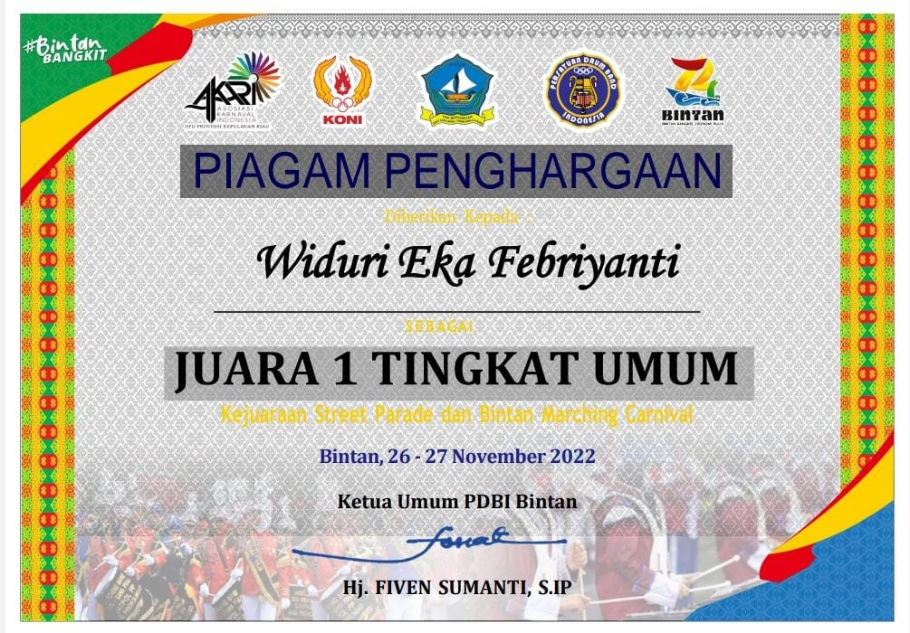

Projek Harian SMK
Aplikasi perpustakaan Berbasis Web
Bootstrap, MySQL

Sertifikat Penghargaan
Juara 1 Tingkat Umum
kabupaten/kota
Projek akhir Magang SMK
Aplikasi Inventori Barang
Bootstrap, MySQL

Sertifikat Penghargaan
Partisipasi peserta perwakilan provinsi
Nasional, Pekanbaru 2017
Projek akhir Pemrograman Berorientasi Objek
Aplikasi Klinik Kesehatan
Bootstrap, MySQL